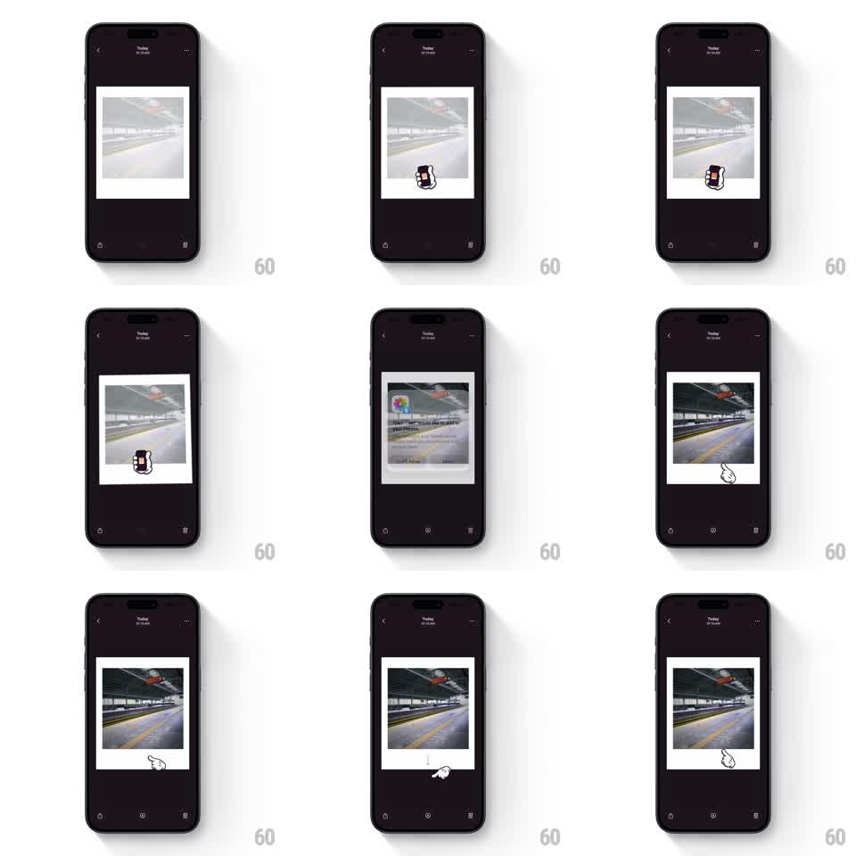

Media
Frame-by-frame

Rebuild this animation 1:1: Pico Cam's develop coach marks - a polaroid on the dark detail screen shakes with a cartoon hand icon as the photo develops from milky white to full color, followed by a swipe-down hand coach mark teaching dismissal.

Rebuild this animation 1:1: Pico Cam's develop coach marks - a polaroid on the dark detail screen shakes with a cartoon hand icon as the photo develops from milky white to full color, followed by a swipe-down hand coach mark teaching dismissal.
## Integration
Integration: stack-agnostic spec - springs given as stiffness/damping, timed motions as duration + curve; map every value to your framework and animation library of choice.
## Scene
Photo detail screen on near-black: header ("Today", time, back and more buttons), a centered white-framed polaroid, and a hand-pointer coach mark. Mid-sequence a coach card with a colorful icon and explainer text overlays the polaroid.
## Motion spec
Pattern: guided develop loop - shake animation synced to the photo developing, then a swipe-down gesture hint.
- The hand grabs the polaroid and shakes it (rotate +/- 6deg, translate +/- 4px, ~4Hz, 1.2s per burst).
- Each shake burst advances development: the photo crossfades from blank white through washed-out to full color in 3 steps tied to the bursts.
- A coach card slides up over the polaroid (translate 40px -> 0, 300ms, ease-out) explaining the gesture, then dismisses.
- The hand moves below the polaroid and performs a swipe-down demo (drag down 60px with the card following with slight lag, 600ms, ease-in-out, then snap back, repeat twice).
## Calibration
- Development steps must visibly track the shakes - cause and effect.
- The swipe-down demo loops exactly twice, then stops.
## Reduced motion
No shaking: photo develops via a single 1s crossfade; coach text appears statically.
## Don't miss
- The polaroid keeps its white frame and slight tilt through every shake.
- The hand icon is drawn cartoon style with a dark outline - not an emoji.